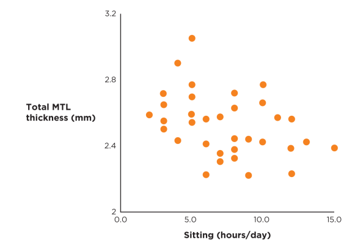
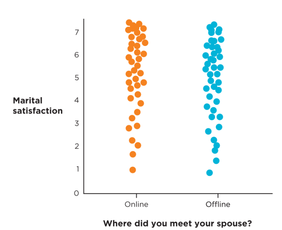
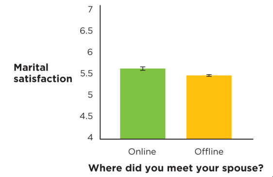
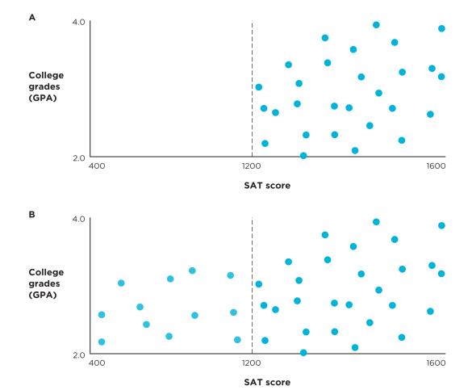
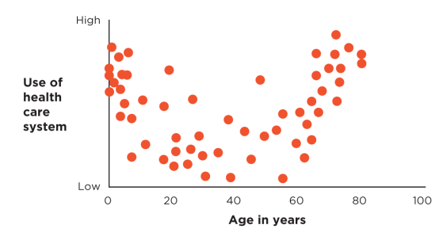
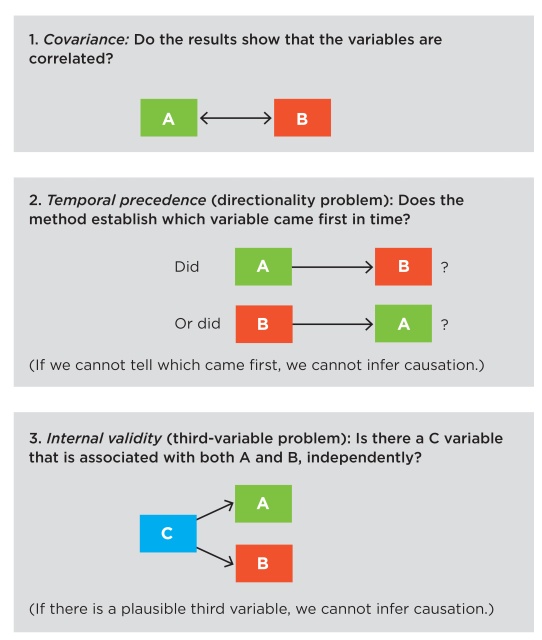

Last Week Review & Announcements
Announcements and Due Dates
Keep turning in reading evidence if you are reading the textbook and taking good notes (which you should be doing either way!)
Remember that you can give anonymous instructor feedback to me at anytime via the Qualtrics survey link under the “Getting Started & Course Overview - BEGIN HERE” header in Blackboard.
No class on Tuesday, October 22nd - Fall Break! Make sure to spend part of it relaxing and recharging, everyone.
I will have office hours again at 3:00pm - 6:00pm EST in AuSable 1307 on Friday 10/18/2024. Please consider coming if you have recently been struggling.
Last Week Content
We took the exam 1 / midterm (bleh!) - we will discuss momentarily.
We discussed various sampling methods and techniques, and their relative strengths and weaknesses in extracting a representative sample from a population of interest.
We talked about how to understand external validity as a function of the sampling technique used, and when this validity is most important.
Exam Review
Areas for Review
- Will go over in class!
Quiz 7
Quiz Content
- Covers all content from 10/8 class meeting, including but not limited to:
- Chapter 7 of Morling Textbook
- Lecture on Chapter 7
- Any last minute questions?
Quiz Rules
- From the Syllabus:
- Each quiz is 10 multiple-choice questions, 1 point for each question
- Quizzes will be taken at the start of the class period on the Blackboard LMS
- Quizzes will be on content covered in the previous lecture and the associated reading for that lecture
- Quizzes are timed, 23 minutes only (previously was 15 minutes). If you finish before time is up, please remain in class and find another activity to work on quietly
- Quizzes are open-note and open-book, that is, you are allowed to use those resources during the quizzes. Thus, they reward good structure in thoughtfulness in your notes and preparation
- You may not collaborate with others during the quizzes, or discuss questions with other students after the quiz. You cannot use AI tools or the internet to help you during the quiz
- Quizzes and exam will be ended early if all students are clearly finished and content with their answers
- Quizzes will be graded promptly and reviewed the following week
Learning Objectives
Textbook Objectives
Explain that measured variables - not any particular statistic - make a study correlational.
Interrogate the construct validity and statistical validity (and, of lower priority, external validity) of an association claim.
Explain why a correlational study can support an association claim, but not a causal claim.
Professor’s Objectives
Be able to understand the defining characteristics of a correlational, bivariate research design
Be able to use appropriate vocabulary and logic used in describing and assessing bivariate designs
Chapter Overview
Chapter Overview
Moving forward, much of the content will be about applying chapters 1 - 7 to different research designs. Make sure you review vocab from the first half of class.
Bivariate \(\rightarrow\) _____ variables
Two, measured variables \(\rightarrow\) likely _____ claim
Review: Remember the vocabulary we should expect with associative claims between
- E.g., “linked”, “associated with”, “correlated with”, etc.
- Discuss: Any other examples of vocab normally used with associative claims?
Bivariate Correlation
Overview
- Review: Recall that there are three possible associations / relationship descriptions between two variables:
- Positive
- Negative
- _____
Association Between Two Continuous Variables
- Example:
- Two self-report measurements are strongly, positively correlated with one another
- Review: what type of validity is this possibly associated with? _____
- Discuss: what statistic do we use for association between two continuous variables, and what value would indicate a strong, positive relationship?
- Review: When using \(r\) correlation coefficient, _____ is the most appropriate graphing method

Association Between Categorical and Continuous Variables
What do we do when we have one categorical/discrete and one continuous variable?
One option: A sort of “split” scatterplot by the categorical variable

Discuss: What is the direction and strength of relationship here?
In most cases, we will probably prefer other methods to graphical display information when we have categorical and continuous variables.
Another option: A _____

- Discuss: What do you all think those small, black bars mean? What sorts of helpful information could they tell us about differences between the groups?
Fully Correlation Design
A _____ design is one that results from all relevant variables being measured, not based on what scale of measurement was used, statistic, or graph.
The designs that we discuss are largely defined by the whether variables are measured or manipulated and the relationship we hypothesize between the variables (i.e., what claim we are attempting to make)
Critical Association Claims
Construct Validity
Review: construct validity is all about the measurement reliability and validity of the tools we use to measure a phenomenon.
- 3 reliabilities: test-retest, _____ , and internal
- 5 validities: face, content, criterion, convergent, divergent/discriminant
Use the terms and suggestions from chapters 5 and 6 to assess this!
Discuss: One of the items on one of my measures may not be measuring the same constructs as the others due to questionable use of the word “not” in the item.
- How would we identify an item not well correlated with other items of the same construct? _____
- What vocabulary do we use to describe this problem? _____
Statistical Validity
- Statistical validity has multiple components to be looking for:
Effect Size
Assessing \(r\) correlation coefficient effect
- General guideline: 0.10 (weak), 0.20 (moderate), 0.30 (powerful), >0.40 (very powerful) - Table 8.4 on pg 474
We may also use _____
- This refers to the amount of variance that one variable accounts for in another
Low effect \(\rightarrow\) possible negligible or non-meaningful effect
High effect \(\rightarrow\) possible meaningful/impactful effect
Precision
Review: What do we call the intervals in which 95% of estimates will fall? _____
Common notation: [Low-end Estimate, High-end Estimate]
Larger sample size \(\rightarrow\) _____ confidence intervals
More precision = “better”, more accurate estimate
Replication
Has this association been shown before in the literature?
We may _____ the study and measurements again on a new group and see if we get a similar value
Review: This is a good use case for literature review and meta-analysis articles, as they can compile different studies investigating the same association
Outliers
Discuss: Based on what you all know from previous classes, what is the definition of an outlier?
An outlier, especially one _____ on both variables, can greatly sway the relationship of two variables.
However, we should not simply throw out outliers because they are inconvenient findings.
- Instead, we may consider robust/non-parametric statistics that can work around them as is
Restriction of Range
- This is when we do not have points across the full number of possible levels on one or both of our variables

Curvilinear Relationships
- \(r\) assumes a _____ relationship between the two variables, but this is not true of all relationships in reality

Internal Validity
- For association claims, we do not need to be concerned with meeting standards of internal validity, because a correlative design cannot explore causal relationships.
- Review: What design can investigate causation? _____
- Review: What is the common phrase we use to describe the relationship between correlation and causation?
- _____
- Put simply, association alone does not tell us one “caused” the other!
- Discuss: What were the 3 causation criteria to establish a causal claim? Describe each.
- Covariance
- _____ - directionality problem
- Internal validity - third-variable problem

- Example: I am measuring the relationship between exercise and feeling of self-worth, both measured as continuous
- High, positive correlation between the two - can I say exercise causes higher self-worth? _____
- Say energy level is correlated with both exercise and feeling of self-worth, so what really is the cause?
- What is the so-called third-variable here? _____
External Validity
What matters more for “good”, representative sampling - size of sample or methodology? _____
Bad external validity does not necessarily invalidate a claim, but just limits its generalizability
Discuss: I use quota sampling to gather my participants, and find an r = 0.60 relationship between the variables
- What direction and strength of relationship is this?
- Is this a biased or unbiased sample?
_____ are some third variable that plays a partial role in the relationship between two variable
- These may result in a broader, more complicated theory around certain constructs
- But most psychological constructs are complex!